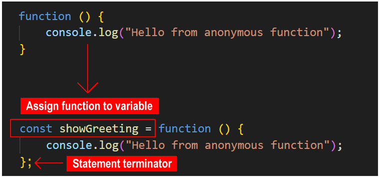
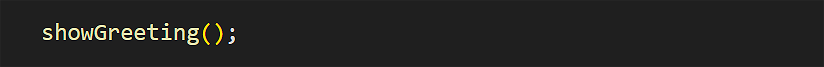
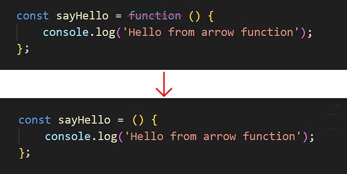
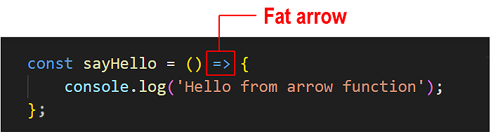
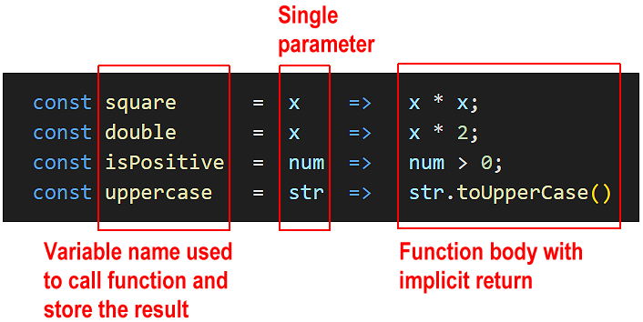

Learning Goals
At the end of this Tutorial, you will be able to:
- Create an anonymous function expression whose value is stored in a variable.
- Work with parameters, arguments and return values in anonymous functions.
- Add default input values to anonymous functions.
- Recognise that anonymous functions are not hoisted.
- Create and call an arrow function.
- Use the shorthand syntax for arrow functions with only a single statement.
- Pass single or multiple arguments to an arrow function.
- Pass arrow function output back to the calling program with implicit or explicit returns.
- Immediately invoke an anonymous or arrow function without calling it.
For this Tutorial, in your javascript/exercises folder, create a new HTML file named workfile-9.html.
Create a new empty text file named script-9.js and save it in this same folder.
Add a link to script-9.js in your workfile-9.html file using a <script> tag with the defer attribute.
About anonymous functions
Unlike a function declaration, an anonymous function is a function without a name.
But if it has no name, how can an anonymous function be called in a program?
One option is to assign the anonymous function to a variable declared with the const keyword.
You can then call the anonymous function in a similar way to how you call a function declaration. See below.
Using the const variable type ensures the function is not accidentally changed or overwritten elsewhere in the program.
(Strictly speaking, an anonymous function is not stored inside a JavaScript variable. Only the output that the function returns is stored in the variable.)
Anonymous functions are also called function expressions.
Copy the following sample anonymous function to your script-9.js file and verify it runs correctly.
// ======== ANONYMOUS FUNCTIONS ========
// Anonymous function
const showGreeting = function () {
console.log('Hello from anonymous function');
};
showGreeting(); // Hello from anonymous function
Parameters, arguments, and return values
As with function declarations, an anonymous function can contain parameters to which you can pass values as arguments. And an anonymous function can return a value back to the program that called it.
Copy these two anonymous functions to your script-9.js file and verify they run correctly.
// Anonymous function with two parameters that returns a value
const sumNumbers = function(a, b) {
return a + b;
};
// Call the function with two arguments
let resultSum = sumNumbers(5, 3);
// Outputs result to console
console.log(`Returned result: ${resultSum}`);
// Anonymous function with two parameters that returns a value
const multiplyNumbers = function(x, y) {
return x * y;
};
// Call the function with two arguments
let resultMultiply = multiplyNumbers(5, 3);
// Outputs result to console
console.log(`Returned result: ${resultMultiply}`);Anonymous functions are particularly useful when:
About arrow functions
A so-called arrow function is a shorthand or quick way of typing an anonymous function expression. As with regular anonymous functions, you must assign an arrow function to a variable if you want to call it from elsewhere in the program. Arrow functions are not hoisted. You must create them before you call them in your program.
You can convert a regular anonymous function to an arrow function as follows:
- Remove the function keyword. But leave the parentheses (). 
- After the () and before the opening code block {, type an equals sign and a right angle bracket character =>. This is called the ‘fat arrow‘ symbol. 
That's it. You have now created an arrow function.
Copy the sample arrow function below into your script-9.js file and verify it runs correctly.
// ======== ARROW FUNCTIONS ========
// Arrow function
const helloFromArrow = () => {
console.log('Hello from arrow function');
};
// Call the arrow function using the variable name
helloFromArrow();Parameters, arguments, and return values
As with regular anonymous functions, an arrow function can contain parameters that you can pass values to as arguments. And an arrow function can return a value back to the program that called it.
Arrow functions are best used when:
- There is only one statement in the function body.
- There is no or only one parameter expected by the function.
Single-statement, single-parameter arrow functions
When an arrow function contains just one input parameter, you can omit the usual parentheses () around that parameter.
Copy the following two arrow functions to your script-9.js file.
// Arrow function without parentheses around single parameter
const greetNoParen = name => {
return `Hello, ${name}!`;
};
const greetingNoParen = greetNoParen("Mary");
console.log(greetingNoParen); // Hello, Mary!Implicit and explicit returns from arrow functions
But you can make this code even more concise! When an arrow function contains only one statement, you can:
- Write the arrow function on one line.
- Omit the { } around the code block.
- Omit the return keyword.
In script-9.js, update your arrow function as shown below and verify it still works.
// Arrow function without parentheses
const greetNoParen = name => `Hello, ${name}!`;No { } and no return keyword needed!
When an arrow function contains only a single statement, omitting the return keyword creates an implicit return. See the illustration below.
Copy the following arrow functions with implicit returns to your script-9.js file.
// Single-statement arrow functions with implicit returns
const shortGreet = () => 'Hello with no parameter!';
console.log(shortGreet()); // Hello with no parameter!
const double = x => x * 2;
console.log(double(10)); // 20
const halfNum = num => (num / 2);
console.log(halfNum(200)); // 100
const add15ToPrice = num => (num + 15);
console.log(add15ToPrice(100)); // 115
const increasePriceby5Percent = num => (num + (num * .05));
console.log(increasePriceby5Percent(200)); // 210
const isPositive = num => num > 0;
console.log(isPositive(5)); // true
const uppercase = str => str.toUpperCase()
console.log(uppercase("hello")); // HELLOVerify the above functions all run without error.
Single-statement, multiple-parameter arrow functions
Here are some examples of single-statement arrow functions with implicit returns that accept multiple parameters.
// Arrow functions with multiple parameters and implicit returns
// Add three numbers
const addNums = (x, y, z) => x + y + z;
console.log(addNums(4, 8, 16)); // 28
// Divide one number by another
const divideNum = (num1, num2) => num1 / num2;
console.log(divideNum(16, 8)); // 2
// Calculate product price after 20% tax
const finalPrice = (price, tax) => (price + (price * tax));
console.log(finalPrice(50, .20)); // 60Copy the above functions to your script-9.js file and verify they run without error.
Note: It is not recommended to use arrow functions when you have multiple statements in the function body. You will not shorten the function syntax significantly and increase the likelihood of errors.
Arrow functions are best suited for:
Anonymous and arrow functions are not hoisted
One important difference between a function declaration and an anonymous or arrow function is that the first is hoisted while the other two are not.
As a result, you can call an anonymous or arrow function only after you have created it – and never before.
Immediately-invoked anonymous and arrow functions
You can amend the syntax of an anonymous or arrow function so that it is run without being called from elsewhere in the program. Such a function is said to be immediately-invoked. This pattern is known as an Immediately-Invoked Function Expression (IIFE).
Note that function declarations cannot be immediately-invoked. Only anonymous and arrow functions can.
To invoke an anonymous function immediately, wrap the function inside a parenthesis () and add another parenthesis () after it.
Copy this anonymous function to your script-9.js file and verify it runs without being called.
// Immediately-invoked anonymous function
(function() {
console.log("Hello from immediately-invoked anonymous function");
})();Because such a function is not called but runs immediately, it does not need a name. Accordingly, you do not need to assign it to a variable.
To invoke an arrow function immediately, wrap the function inside a parenthesis () and add another parenthesis () after it.
Copy the arrow function below to your script-9.js file and verify it runs without being called.
// Immediately invoked arrow functions
(() => {
console.log("Hello from arrow function");
})();
// With parameters
((name, age) => {
console.log(`Processing ${name}, age ${age}`);
return `Processed ${name}`;
})('John', 30);Try it yourself
In your script file...
---
Create an anonymous function that takes two parameters: firstName and lastName. The function should output a full name with the last name in uppercase. Store it in a variable called formatName.
---
Create an anonymous function that takes three numbers as parameters and outputs their average. Store the output it in a variable called calculateAverage.
---
Create an immediately-invoked anonymous function that calculates and displays the area of a rectangle with width of 10 and height of 5.
---
Create these arrow functions that work with multiple parameters:
- Create combineWords that takes two strings and joins them with a space
- Create calculateArea that computes the area of a rectangle (width × height)
- Create calculateVolume that computes the volume of a box (width × height × depth)
---
Convert these anonymous functions to arrow functions:
// Simple greeting
const sayHelloUser = function() {
return "Hello!";
};
// Square a number
const squareNum = function(x) {
return x * x;
};
// Check if string is empty
const isEmptyStr = function(str) {
return str.length === 0;
};
---
More learning resources
Tutorial Quiz
Tutorial Podcast
Sample AI prompts
I'm learning about anonymous functions in JavaScript. Could you create a comparison table showing the key differences between regular function declarations and anonymous functions?I understand how to create basic anonymous functions, but I'm struggling to understand hoisting with anonymous functions versus regular functions. Could you show me some examples that illustrate why anonymous functions can't be called before they're defined, while regular functions can?
Could you show me some common mistakes programmers make when working with anonymous functions and how to fix them? Please include examples of scope issues, incorrect syntax, and any other pitfalls I should watch out for.I'm learning about arrow functions in JavaScript. Could you compare them with regular anonymous functions, focusing specifically on syntax differences and use cases? Please provide practical examples showing when arrow functions would be the better choice and when they wouldn't be ideal.I understand the basic syntax of arrow functions with implicit returns, but I'm confused about when I can and can't use them. Could you create a guide showing different scenarios where implicit returns work and don't work, with examples of common mistakes to avoid?